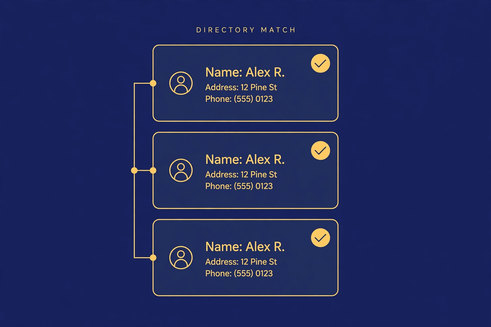
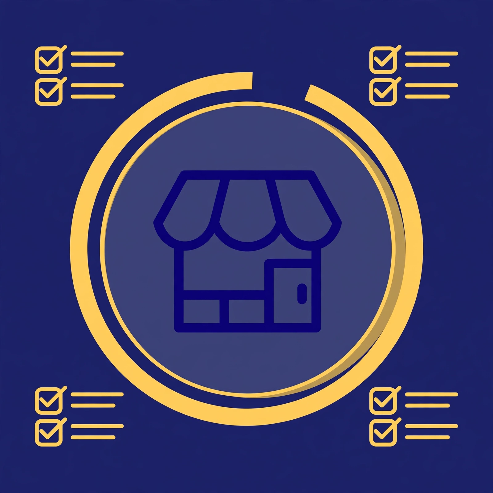
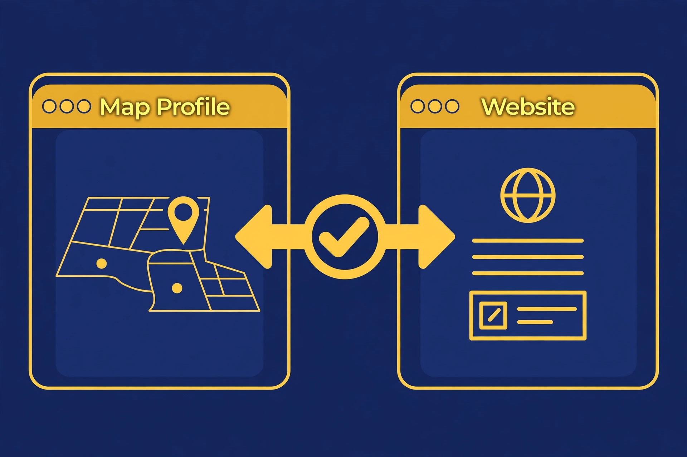
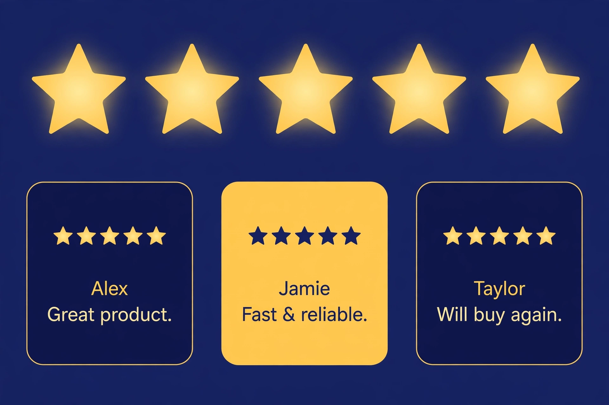

The last video was about starting from zero. This one is the opposite problem. Your Google Maps profile exists, customers can find it, and it still doesn't ring. You are not invisible. You are just not in the top three. And on Google Maps, everything below the top three might as well be page two.
1Put your address where the work is
Google Maps ranking starts with something you can't out-optimize: distance. When someone searches "electrician near me," Google weighs how close your address is to the searcher. That's not a trick you can hack. It's physics.
So the first step is honest placement. Your address should sit inside the city you actually want to win — not a P.O. box, not a virtual office, not a home address forty minutes outside town. And if you do both residential and commercial work, pick a base that doesn't box you out of half your market. Every step after this one multiplies an address that's in the right place — or fights an address that isn't.
2Use your real name. No games.
This is the step where most electricians get tempted — and where this framework draws its line. You'll see competitors with names like "Best Electrician Dallas 24/7 Cheap." It looks like free keywords. It's actually against Google's rules: your profile name has to match your real-world business name, the one on your signage, your website, your invoices. Adding services or city names you don't legally own breaks the guideline.
And Google enforces it. A stuffed name can get edited by Google, reported by a competitor, and repeat violations can get the whole profile suspended. That's not a scare tactic — it's the written policy. So step two is simple and non-negotiable: your real legal name, nothing added. Every competitor gaming this step is one report away from disappearing. You won't be.
3Get listed where it counts — for free

Citations are other websites confirming you exist: your name, address, and phone number listed on directories Google already trusts. Yelp, Nextdoor, Angi, the Better Business Bureau. These listings are free — the platforms will try to sell you ads and upgrades on the way in, and you can walk straight past all of it. If it's free, take it. Paid upgrades are optional, never required.
And that's the entire job. A handful of trusted directories with identical information beats a pile of obscure ones every time. Blasting your business onto two hundred junk directories is a leftover tactic from a decade ago — it doesn't move the needle, and messy inconsistent data across low-quality sites can do more harm than good. Match the big ones. Skip the rest.
4Fill out the profile completely

Categories come first, because the primary category is one of the strongest signals telling Google what kind of business you are. Pick the one that describes your main work most precisely — then add secondary categories only for services you genuinely offer. Don't dilute it with things you did once two years ago.
Then fill out everything else like you mean it: every service with a real description, full hours including holidays, photos of actual work — not stock photos — and a complete business description. Every blank field is a field a competitor has filled. A half-empty profile tells Google, and the customer reading it, that the business might not be serious.
5Make your website say the same thing

This is the quiet killer. The profile says "electrician" and targets one city, but the website's homepage talks about general contracting across three counties. Google looks at both, can't tell what the business is actually best at — and ranks it for nothing.
The fix is boring and it works: pick your main service and your main area, and say it the same way in both places. Your homepage represents your whole business, so it should clearly match your primary Google category. One identity, everywhere. When the profile and the website agree, Google stops guessing.
6Reviews decide everything

If you only do one step properly, make it this one. Reviews are the heaviest weight in the top-three fight — and not just the star count. When a customer writes "rewired our whole panel in a day," those exact service words sit on your profile where Google and your next customer both read them. That's relevance you can't buy.
So ask for them. After every finished job, send the direct review link while the customer is still happy. Reply to every review that lands — the next customer reads your replies before they ever call. And here's the part people treat as a project when it's actually a habit: the stream never stops. A profile gaining reviews every month looks alive. One frozen at the same number for a year looks abandoned. Keep the pace human and steady, and never let it go quiet.
7Tell one story everywhere
Here's the step most people miss: customers aren't the only ones reading your profile anymore. AI assistants answer "who's a good electrician near me" by pulling from the same web — your website, your profile, your reviews, your posts. If those sources tell five different stories, the AI can't recommend you with confidence. If they all say the same thing, you become the easy answer.
So keep the story consistent everywhere: same name, same services, same city — on your site, your profile, your directory listings. And use the free tools Google gives you: posts about recent jobs, and FAQs that answer the questions customers actually ask. They're fresh signals attached directly to your profile, and they feed both the map ranking and the AI answers. One story, everywhere, kept current.
The checklist, in order
| STEP | DO THIS | THE HONEST CHECK |
|---|---|---|
| 1 | Address inside your target city | No P.O. boxes, no virtual offices |
| 2 | Real legal business name | Nothing added — stuffing risks suspension |
| 3 | Free listings: Yelp, Nextdoor, Angi, BBB | Take the free listing, skip the upsell |
| 4 | Complete profile, categories first | Every field filled like you mean it |
| 5 | Website matches the profile | Same service, same city, both places |
| 6 | Review stream with service words | Real customers, reply to all, never stop |
| 7 | One consistent story + posts & FAQs | AI reads the same web — feed it well |
No timeline promises.No tricks.Find the hole. Fix the hole. Then grow.
Sources
Every research claim in this video comes from a named source:
- Search Engine Journal — Google's local ranking factors — local results are based primarily on relevance, distance, and prominence; more reviews and positive ratings can improve local ranking.
- Web Marketing Academy — Google Business Profile optimization guide — the profile name must match the real-world business name; adding services or locations breaks the rules, and Google can edit a stuffed name or suspend repeat violators. The primary category is one of the strongest relevance signals.
- Hypetrix — Google Business Profile checklist (2026) — business name must match signage, website, and invoices; keyword-stuffed names break guidelines and get profiles suspended or reported by competitors.
- ZingGrow — Google Business Profile naming rules — no keywords or location descriptors in the business name unless they're part of the registered name.
A note on what's real
This is a practitioner framework — the seven steps in the order I'd actually do them for an electrician's profile that's already live but stuck. What's hype-free here by design: no ranking-time guarantees (rankings are earned, not scheduled), no keyword-stuffed business names (against Google's rules, and the suspension risk is real), no bulk-citation blasts, no tricks. The directories named here all offer genuinely free listings — paid upgrades are optional, never required. And reviews aren't a one-time project: the stream never stops, because that's what keeps the profile alive.